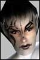

| Pages (2): [1] 2 » |  Last Thread Next Thread Last Thread Next Thread  |
| Author | Thread |
| Lunya Leetas  Registered: Jun 2003 | Death and Dreams ((the following occured Wednesday, July 23)) Lunya stands motionless in Reets, watching Malachii walk away from her for the millionth time in her life. Her eyes quickly fill with tears again as she stands alone, completely alone. She could still feel Avrik's goodbye kiss on her lips. He'd left her, too. The one man she thought would stay with her always had given up and walked away. Now, Malachii had admitted that he'd loved her at one point. "Did he really say that, or was it in my mind?" She thought for a moment, ignoring the people brushing past her to run up to the glass floor. What had really happened? Avrik... gone. "Is he coming back?" "No, probably not." Why would he? Malachii had loved her. She made a mistake leaving him. Gave up far too soon. She didn't deserve him if she couldn't deal with his lack of affection. Why didn't she know he'd been testing her? Why did she stand so close to Avrik that night weeks ago... when she should have stayed alone hoping for Malachii to come back to comfort her. She'd waited for him so many times... the one time he came back, she hadn't been waiting. Now he despised her. He drove Avrik away from her. No... she drove Avrik away. "Stop blaming others." She blinked. Realizing her tears were spilling shamelessly down her cheeks, Lunya ran outside. She took a deep breath, her mind racing now. "What do I do? I'm alone... no one in this world will ever love me now. I've ruined everything. Where do I go?" She remembered sitting with Malachii at Broken Shores Falls... hours spent with him there once. Then her mind flashed to the time she spent there with Avrik. Listening to GSP late one night on their comms... watching the Clan scout patrolling... paying no attention to them up so high on the rocks. The night sky, the stars... yes, she wanted to be there. Water crashing on the rocks below, wolves howling, and the cool, moist breeze with the tiny droplets of water that made everything glisten in the moonlight. That was where an adventurer should be when they can't stand civilization any longer. "Go there, Lunya. Sit on the warm rocks at sunset and let your tears flow like the river... tumbling down and splashing on the rocks, your own small waterfall." ********** In her apartment, Lunya sat on the edge of her bed and sent a message to Malcom. "I need your help, hon... right now, please." Realizing how ironic it was to ask her ex-fiance for help in such a situation, Lunya sweet-talked Malcom "Shadowgrider" Warner into hacking her insurance. "I just need you to do it, hon... please? I need to hide... I have some things to do. Just do this one thing for me. I know it's risky, but I'll be fine. You know me." He reluctantly agreed... and as she waited for his call saying it was done, she wrote a letter. Thinking of poor Uald and how this would affect her, Lunya began sobbing again as she wrote an explanation with her own hands. No sending this over her comm... not for her closest friend. Uald would need to know why. "I'm so sorry... I hope you don't hate me... it will be ok..." ********** By the time Malcom called to tell Lunya her insurance was no longer active, she was already flying over Broken Shores. A nasty Notum storm was making it hard to see, but she knew the way well enough that it didn't matter. She wiped at her tears with the back of her hand. "Why did you leave me?" she asked both of them... neither of whom could hear her. "How could you do such a thing? You know... you both know... how afraid I am..." Lunya reached the Falls and was quite relieved that the storm hadn't stretched that far. The skies all around were clear, a pretty rose-color as the twin suns were already sinking. She hurried to her favorite spot... high up where she could see the entire Falls. She sat listening to the rushing water and soft songs of the birds and other wildlife, as her sobs echoed quietly against the rocks. She cried hard, but not loud. Her body ached from the pain in her heart and mind. "Alone... all alone" Lunya pulled her knees to her chest and hugged them there, rocking herself slightly as she watched the sky turn orange and purple... stars beginning to appear. She remembered a story her mother had told her once... one of the few times either of her parents ever spoke more than a word or two at a time... a story about an old legend from Earth times. Heaven... a beautiful idea. She fixed her eyes on the stars and thought about that image... a perfect place with no pain or fear. A pretty dream... a bedtime story. She stood up and looked down at the dim rainbow made by the spray of the waterfall... faint because of the failing light, but still beautiful. "Yes, a pretty dream..." Last edited by Lunya on July 27th, 2003 at 23:35 |
 July 27th, 2003 20:06 July 27th, 2003 20:06 | #1 |
| Elle DiLaine Eleet  Registered: Jul 2003 | Out of Time Avrik laid on the tin roof and basked in the light of the fading suns. He watched stars slowly begin to lend their meagre light to the twilight sky and exhaled. Now that he was here he didn't know what to do. It had always been his plan to retire some day to this little camp in the lee of the Broken Shores falls, but he hadn't been prepared to start this soon. The drifters on the ground below him were clanners, but they weren't going to bother a tired, world-weary soldier regardless of his alignment. Avrik silently thanked the good fortune that had allowed him to befriend these people when he was still working for the Council. He then silently cursed the fortune that had led him back here before his time. It wasn't that he was afraid of Malachii, he was willing to stand up to the man any time. It was that he never knew if the agent was standing next to him, or was three outposts away killing a cyborg. He couldn't be constantly on edge, that wasn't fair to Lunya. She shouldn't have to deal with his moods or worry about his safety. Maybe he could return later when things had settled down. Maybe they could pick up where they left off... He saw a Yalmaha streak by overhead and wondered what its passenger was thinking. "Probably just out on a mission and decided to take the scenic route." Suddenly his comm crackled into life, "I love you hon...I'm sorry" Avrik lurched to his feet, "Lun?! You're coming in clearly...where are you? You left Reet's.." He stared transfixed at the peak of the falls and saw the Yalm land on a rock that jutted precipitously out over the deadly drop. Avrik lept off the roof and dashed as fast as he could toward the falls. His eyes never left the tiny form he could barely see clutching itself on the rim of the rocks. When he finally crested the final rise he lept down into the shallow, rushing water below and sprinted down the impossibly long trench towards Lunya. If he moved as fast as he could, surely he could save her... He rounded the last bend and reached the rocks in time to see his love hurl herself into the jaws of death. "Oh god what have I done..." |
| July 27th, 2003 20:54 | #2 |
| Alistia Leet  Registered: Jul 2003 | Uald emerges from her apartment, he eyes stained red from crying. In her hands she holds a slightly crumpled piece of paper... the ink smeared from tears. The owner's of which you are not certain. She drags her feet in a shuffle pass Lunya's apartment door, choking back a sob as she galnes at it for the briefest of moments, and allows the note to slip through her fingers as she passes it... Looking down onto the paper... it reads... "Uald: Please don't hate me for this... but I just couldn't live with myself anymore. Everything i do or think is wrong. And now I'm alone. Avrik left me in Reet's a while ago. I don't know where he went... I suppose he's gone for good. He was afraid Malachii would try to hurt me by hurting him. Avrik would have fought back if Malachii tried to kill him, except that I wouldn't be able to cope if either of them got hurt. So... he left me... thinking it would be easier for me to be alone than to deal with Malachii watching us every second... like he was waiting for just the right moment to hurt me... or maybe Avrik. I don't know. I can't shake this feeling... Avrik isn't coming back. He kissed me goodbye and he left me. He left because of Malachii and it's my fault. I ruined everything with Malachii. I thought he never loved or cared about me at all. Now... after Avrik is gone... I found out how wrong I was to give up on him. I thought he despised me all the time we were together. I left him just when he was about to try. He came back to the pool that night to appologise to me... and he saw Avrik hugging me by the water. He never came back after leaving before... why would I expect he ever would? How could I have know he cared at all? ...And I left him. I couldn't endure what I couldn't understand. I brought misery to both of them. I'm like a poison in a pretty bottle, I guess. I kill everything I love. I deserve to be alone for the rest of my life... the worst fate I could possibly have from my point of view... but I can't handle my own punishment. I got Malcom to hack my insurance. He didn't know my reasons, so don't be angry with him. I can't come back this time. I'm so sorry for everything I've done. --Lunya" |
| July 27th, 2003 22:07 | #3 |
| Elle DiLaine Eleet Registered: Jul 2003 | Not Today "Give me something hard." The bartender turned and grabbed one of the bottles behind him and handed it to his customer not bothering to pour it into a glass. He eyed this newest arrival to The Cup and decided he was unimpressed. The man was about six feet tall, athletic, and had blond hair pulled back into a short pony tail. He wore simple, loose-fitting leather clothes and looked for all the world like any other veteran of the Rubi-Kan civil wars. Cole "Avrik" Lochlan wouldn't have it any other way. He swallowed a mouthful of the brackish liquid and thought about the previous few days. He had been a coward and abandoned the woman he loved rather than confront a psychopathic murderer. A mere hours later he had arrived at the Broken Shores falls just in time to see her leap to be dashed on the rocks below. Avrik had checked every reclaim terminal on Rubi-Ka to no avail. She had left him just as he had left her: terrified and alone. He also remembered his conversation with April and how she had urged him to accept Lunya's death and deal with his grief, and he remembered that he had decided at that moment to do no such thing. He would fix things or die trying. Avrik took his bottle and walked to a center table where he continued to look incon****uous while waiting for his contact. Coming to Athens had been risky at best since he was now an Omni-Tek employee, but he had needed a place where the subject of his conversation would be overlooked as nearly commonplace. In Clan territory, talk of infiltrating Omni-Med would seem like just one more act of daring terrorism in a long line of acts of daring terrorism. Getting in had been difficult. His defection was well known by some of his old military partners in the Athen Shire militia, but now that the Council was disbanded, and funding had ceased, everyone had their price. The door from the hallway opened with a characteristic swish and in stepped a man who drew attention as a force of habit. Wearing trademark sunglasses and an open, silver shirt Malcom the "Shadowgrider" caused more than a few heads to turn. However, none were willing to question, and he sat unopposed across from Avrik. "Nice place you picked. Beer's pretty good here." Malcom paused then added with a wink, "So are the back rooms heh." Avrik nodded and returned, "You've heard about Lunya." "Yeah...nasty business there." "You hacked her policy. She's dead now because you did her a favor." "Wha? How'd you know it was me? I'm good about that sort of thing man, I don't leave traces...and..she didn't say she was going to jump or anything, just that she needed to hide." Malcom looked up at the ceiling and exhaled. "Actually, I didn't know it was you until you told me just now. And I know you never would have removed her insurance if you had known..I don't blame you Malcom. It's my fault she jumped. I never should have left her at Reet's." Avrik hammered back another swig of the Jack and looked to Shadowgrider. "I've got an idea, but I need your help." Malcom fixed him with intense eyes, "I don't like the sound of that mate...what've you got up your sleeves?" "I know Omni-Med keeps a backup of every employee's DNA pattern for testing purposes. I saw the databanks once when I was undercover in the InternOps. If I can get ahold of that, we can make another body for her...I know it's possible." "You're crazy. Even if you get a body, that "soul" thing is long gone! That's why reclaim tech is so precise. You've got about two and half seconds to have a clone ready or the person is gone forever." "Malcom. I have to try. I have to tell her I'm sorry, that I was wrong...that I still love her." Avrik buried his head in his hands and pinched the bridge of his nose, breathing deeply. "Listen Avrik, I'm not unsympathetic here. I mean, I liked her too, but don't you think this is a little ill-conceived?" "Crazy is the only thing that has half a chance of working Malcom!" Avrik pounded his fist on the table, drawing some stares from other patrons. "Logic said goodbye as soon as she climbed those goddamned falls!" Malcom sat silent for a few minutes fingering the safety on his Manex Catastrophe and tracing the lines on the table with his eyes. "What do you have in mind..." "I'm raiding Omni-HQ. I'm going to steal Lunya's DNA code from Omni-Med and then tear the whole ****ing district apart until I find someone who can help." "Been there, done that." "Good. Then you can show me the way." |
| July 27th, 2003 22:18 | #4 |
| Elle DiLaine Eleet Registered: Jul 2003 | Hangman's Trap Omni-Pol Supreme guard Richard Thompon hated his patrol route. He had to walk the back halls of Omni-Med where all the freaky experiments were done. He just knew that one of these days some quack surgeon was going to create something they were only supposed to make at Biomare and it would rip his throat out before he even got a shot off. He was almost right. Avrik waited until the guard walked beneath him, then dropped noiselessly to the ground from where had been hanging in the ventilation shaft. He drew a knife from his belt and jammed it into the weak seam where the guard's Elite armor helm mesh with his chestpiece. Richard sputtered once, then Avrik twisted the knife and he died drowning in his own blood. "Clear." From around the corner a streak of color whisked down the corridor to stop a few feet from Avrik. Malcom whispered, "Ok, according to the blueprint I downloaded from Omni-Admin's 'secure' servers the databank room should be down this hall and about 30 meters to the right." "You start working on disabling the security locks, I'll cover our tracks." "You're pretty good at this stuff ya know?" "Spec ops training at Athen War Academy. I'll tell you about it some other time." With that, Shadowgrider bursted down the hall at nano-enhanced speeds and began hacking the locks on the first security door protecting Omni-Med's covert DNA databank. Avrik turned and hoisted the guard's dripping body onto his shoulder and shoved it into the ventilation shaft about meter overhead. He then replaced the grate cover and removed his weapon of choice from a pack he wore on his back. By the time he reached Shadowgrider, the fixer was already through the third door and starting on the databank room lock itself. "You better hurry Malcom, there's a lot more than one guard back in this part of the building." Avrik thought back to how they had entered Omni-med through a highly risky grid port and slaughtered the guards at the observation station with single shots to back of their heads using nano charged bullets designed to paralyze the victim and subsequently rupture their arteries. Following their insertion the pair had stalked the ventilation shafts where Malcom used his skills to disable observation droids before they were detected. Even though there had been opposition it had been light. Lighter than Avrik had expected. An uneasy feeling played at the back of his mind, and he had learned to trust such feelings. Malcom broke his concentration suddenly, "Lock's picked bud." Avrik turned to make a quick scan of the hall, then both of them ran into the sterile, storage room where rows of datafiles could be seen. The room was enormous, encompasing at least a city block in size with hundreds of data stacks creating corridors nearly the entire length of the room. There was but the single entry point, and Avrik once again felt the uneasy feeling clutch at his brain. "Malcom, I need you to find it. Quickly. I'm going outside to watch." Malcom nodded and sprinted to a nearby terminal where he began frantically tapping at a keypad. Avrik stalked around the door, checking for any ancilary traps that were waiting to be sprung upon exit. Satisfied of his safety he glanced over at Malcom, who gave him a thumbs-up and began to sprint down a corridor, apparantly intent upon the location of Lunya's DNA file. Avrik stepped into the hallway outside and shouldered his assault rifle, content to merely be alert. In the distance Avrik could make out a whirring sound that he found familiar but couldn't quite place. He brought his rifle to the ready and slowly traversed the 30 meters back to the main walkway and stole a look down. He froze when he saw the girth of a massive slayerdroid marching directly towards him. Avrik sprinted back to the databank storage room and yelled inside, "Malcom! Get your ass in gear we're about to have company!" Avrik slammed a clip into his weapon, pressed his back against the wall, and prepared to fight his way out. |
| July 27th, 2003 22:19 | #5 |
| Elle DiLaine Eleet Registered: Jul 2003 | Fortune Favors the Bold The slayerdroid's internal sensors detected his presence as soon as he swung into the hallway with his Seburo spitting lead. The first few shots went wide, but soon the bullets were carving fresh gouges in the behemoth's metallic hide. Its lumbering pace accellerated to close the distance with its attacker, but Avrik rolled to the side and watched as the slayerdroid smashed into the wall at his back. He came out of the roll into a crouched postion and fired a volley into the droid's exposed cranial actuators. The machine sparked and groaned as secondary relays compensated for the primary system's failure. The droid pivoted and towered above the small soldier before him, looking down with cold metallic orbs as it prepared to execute the order of its program. Avrik calmly reloaded his rifle as a claw screamed towards his face. At the last possible moment he thumbed the activation on his mirror shield and watched as the momentum from the droid's swing shattered it's plasteel claw on the reflective field of nanobots. Avrik wasted no time in leaping out from under the hissing machine and making for the databank at full speed, stopping only to fire a few more volleys at the slayer's face. He ran through into the room and searched franticly for a defendable position. "Malcom! I thought I told you to get your ass in gear!" Avrik ducked behind a row of terminals and nearly became sick. The recoil from the earlier blow affecting him even though it's force had been turned. His face also bled from dozens of small wounds where shards of the plasteel had impacted. He turned to see the slayerdroid smash through the doorway and into the room, it's autosensors glowing as they searched for signs of the intruders. Avrik was pondering how he was going to survive this when he saw a shadow dart quickly along the upper reaches of the room, clinging to small ledges on the upper support beams. Impossibly, the shadow plummeted from that height onto the back of the droid, then just as quickly vaulted off and landed next to Avrik. "Sorry that took so long. This place is ****ing huge!" "What about the slayer?" The droid took two steps before the explosives planted by Shadowgrider detonated its internal power supply in a defeaning smash. Avrik raised an eyebrow, "So much for subtlety eh?" "I think subtle was out about the time you told me we were going to have company. What say we get the hell out of here now and worry about it later?" "Agreed." As the pair stood up the lights in the room all flared into activity, lighting the room like the desert at midday. "This is Omni-Pol. We have you surrounded. Throw down your weapons and come out peacefully or you will be neutralized." Shadowgrider cracked a smile, "Think we should resist?" Avrik turned towards the now-visible observation window, extended his middle finger, and mouthed **** off. "Guess so", Malcom said as he unslung his Manex and removed the safety. |
| July 27th, 2003 22:20 | #6 |
| Elle DiLaine Eleet Registered: Jul 2003 | At What Price Love? Mordecaii examined his patient with a worried look on his face. The wounds were severe and he wasn't sure if his friend would make it. He turned to the pacing man next to him, wondering why he had been called to Lush Fields and the bank of the Stret River. "Sure you can't tell me what happened? Or why you can't go to a doc?" Malcom wheeled and angrily spat at Mordecaii, "What's it look like man? The guy took a bunch of **** in his chest! That's what the **** happened! And all you need to know is that we can't see no damn doc. He seemed pretty sure you could fix him up, now you gonna do the job or I have to lasso some other punk?" "I'll do what I can." Mordecaii's hands shook slightly as he tried to spiritually direct his nano cloud to closing the grievous wounds on Avrik's chest. "Goddamn...the guy wouldn't even be here if I hadn't hit him with some of my autorepair bots...****" ********* As soon as Avrik lowered his hand Shadowgrider launched a volley of shells into the observation window, sending the assembled Omni-Pol scattering in all directions. Both men hurtled past the smoking ruins of the collapsed slayerdroid and out the doorway into the now brightly lit hallway beyond. Immediately, the facility's autoguns began tracking them and lobbing burning balls of plasma at them. The turrets had no chance of impacting the speeding Shadowgrider, but Avrik wasn't so lucky. A superheated bolt impacted his left leg and sent him careening into a nearby bulkhead. He risked a look down and winced when he saw his cracked, blackened flesh and the white bone protruding from beneath. He saw the repair bots on loan from Malcom begin to stitch his leg back together as he ripped a piece of his sleeve off and tied the make-shift bandage around his wound. Standing up he saw Malcom taking cover behind a row of crates, engaged in a furious firefight with a dozen Omni-Pol troopers beyond. "How's the leg Avrik? Think you can make it?" Malcom managed between bursts. "Take..more than that...to keep me down" Avrik wheezed. He shouldered his Seburo and placed an entire clip into the chest of the nearest trooper, spreading his gore against the wall and floor. "We can't get pinned down Malcom." Malcom glanced at the remaining troopers, "I think they have other ideas." Avrik saw the Omni-Pol Elites begin to pour forth from databank room and fired a few rounds to make them take cover. "Plan B." He took the pack from his back and hurled it towards the Elite soldiers at their backs. When it skidded to a halt Avrik pressed the detonator and collapsed the rear portion of the hallway in a bone-crunching explosion, burying the Elites in tons of rubble. "Push these goddamn crates Malcom!" Shadowgrider pushed the crate forward at a run, using it for cover from the troopers still firing at them. Avrik did the same, but his leg forced him to advance at a much slower pace. Avrik had moved only 10 meters by the time Malcom reached the trooper line. He gave up using his own crate for cover since Malcom was going to be outflanked without support. Vaulting over the box he sprayed the Omni-Pol line and lept forward over their impromptu barricades. He landed hard on his good leg and rolled up under a trooper and sent a single round through his skull. Shadowgrider followed suit, his large caliber Manex punching through the weak points on the Omni armor with ease. In minutes the trench was cleared and the men were on the move again. The facility was on full alert and their every move was being tracked, though with Malcom scouting ahead they were able to avoid most heavy pockets of resistance. A few more times they were engaged in lengthy firefights with troopers, each time losing precious time before the net was fully closed around them. Malcom used his hacked blueprint to weave them around to the security station they had originally entered, only to find it blocked by four Elite soldiers. Avrik turned to Malcom, "I'll draw their fire, you get in there and start your thing." "You sure? There's four of them there man...maybe I should should help out." "No, you need time to prepare the grid: time we won't have if you're out here fighting." "I hope you know what you're doing." "Giving us a goddamn chance!" Avrik turned the corner, rolled into a crouch, brought his rifle up to deal death, and flipped his mirror shield activator. "You've got about 30 seconds!" The four Elites immediately opened fire, their plasma blasts impacting with dull thuds on Avrik's nanobot shield. He returned fire blowing out one's kneecaps in a spray of blood and bone, and then rushing forward tackling another to the ground and firing a burst of shells point blank into his face. Malcom blitzed past the occupied guards and into the security room where his fingers flew over the keypads in the most jury-rigged hack he had ever conceived. After a few seconds he smirked as he watched on the monitors as the installation's autoguns turned on the Omni-Pol defenders. He then turned his attention to patching his way into the grid from the terminal at his fingertips. Outside, Avrik left the third Elite with a knife buried into his helmet. He risked a quick glance down at his wrist to check how much time he had remaining. 2......1...... "Avrik! It's ready!" Shadowgrider turned to the door to see Avrik slump to the ground with a smoking hole in his stomach. Malcom hefted his Manex with both hands, charged into the corridor and brought it down in a two-handed smash onto the Elite's helmet, smashing it apart. He stared down at the bloody face of a young trooper who started begging for his life. Malcom drew a curved knife from a holster on his belt and slowly carved the boy's throat. He withdrew the knife and licked the blood clean, savoring every drop. Turning to Avrik, he hoisted him onto his shoulder and carried him to the waiting, impromptu grid port. He felt familiar sensations as he was digitized and sent to his pre-programmed location. A few seconds later he and Avrik were outside the bridge from HQ to Omni-1 Entertainment. Shadowgrider injected a speed stim into his forearm and began furiously sprinting down the walkway across the Stret with Avrik still on his shoulder. He stopped halfway, out of breath and slumped against a support beam for cover. "You still with me?" Avrik groaned and clutched at his stomach, feeling his blood-soaked skin flake off in his fingers from the plasma burns. "We gotta get you somewhere man. My ****'ll keep you alive, but not forever." Avrik wheezed, "Morrr....decaii. At the....Society." He paused and looked up. "Malcom! Down!" Avrik used all his strength to pull Malcom's head behind the beam and hoisted himself to his knees, using his body to block a shot from an Omni laseraim at the far side of the bridge. Malcom saw Avrik fall from another grievous wound to the chest and hauled him to the edge of the bridge. He looked at the Stret River rushing far below him and muttered a curse. He grabbed ahold of Avrik's arms and then lept into the swirling current. |
| July 27th, 2003 22:23 | #7 |
| Elle DiLaine Eleet Registered: Jul 2003 | Midnight in the Garden Avrik tossed fitfully in his slumber, strange images and spectres haunting him in his feverish state. Mordecaii looked at him and hoped that what he had done had been enough. The chest wounds were closed and the leg had stopped bleeding, but whatever haunted his friend's mind was beyond his power to cure. Malcom had left them earlier, saying that he needed to get to a terminal so he could start covering their tracks. He'd switch the identity info Omni-Pol was tracking with some clanners and allow he and Avrik to retain the ability to be seen in public. Mordecaii didn't trust him, but he knew that whatever Shadowgrider's reputation he had been helping Avrik which was enough. He pulled a bottle of scotch from his pack, took a drink, and stared at the stars. ********* Avrik wandered a blighted landscape he vaguely thought was Tir county. All around him he saw the faces of people he'd grown up with. Some of them were fellow ghetto-rats and others were the merchants who had beaten him when he stole food. He saw his parents, casting him out like unwanted trash as they left for one of the pleasure worlds closer to the Sol system. He saw the army recruiter, telling him of a glorious life at the War Academy where he would have three meals a day and a bunk to sleep on. He saw his best friend and partner screaming out to him in pain as his soul was destroyed by a perma-death weapon. He saw Lunya. Crying alone as he walked away. He stumbled toward the apparition, his legs wading through the piling sand. He struggled onward pushing against the pain gripping his chest, yet she never grew closer. Eventually his body would take no more and he collapsed onto a dune, sand flowing into his mouth. The wind whipped around him, burying him in meters of sand in only a few seconds. When he opened his eyes he was by a pool in Borealis, staring at Lunya as she emerged from the water. Avrik rushed to her, apologies and claims of love spilling from his mouth, but she passed him by without acknowledgement. He turned around to see her walk into Malachii's arms, who smiled a viper's smile and led her directly off a cliff. When Avrik rushed to the edge he saw only another pool of water, with Lunya's broken body lying at the bottom. As he lay sobbing at the edge of the water her eyes opened and she spoke to him from the depths. "Why? I loved you." "I was weak..." "I would have given support." "I was afraid..." "I would have comforted. "I did it for you!" "No." The world bent and twisted until he found himself standing on the rooftop of Reet's Retreat the night he proposed. Lunya stood in front of him with tears in her eyes, a smile on her lips, and her arms around his neck. Avrik wanted to die himself right then. He wanted anything other than to see another vision of the pain he had caused her. He breathlessly whispered "I love you" and clutched her tightly to his chest, wishing he never had to let go. "Why?" "Because you approach life with a love I didn't think possible. You have an intoxicating zeal in your eyes that I had lost. Your kindness unlocks the parts of me that I hold most dear. You love me more than I could ever know, and I can never hold you tightly enough. You're the missing piece of my soul." Avrik breathed deeply, remembering the way her hair smelled and the sound of her laugh. Absorbing all of the details as if it were the last time he would. The vision faded and was replaced by the barrel of Malachii's rifle in his face. Malachii sneered and spoke. "You were weak." "She would have given support." "You were afraid." "She would have comforted." "You did it for her." "I did it because I was selfish." "Yes." ********* Avrik stirred and awoke. He tried to sit up but the tightness in his chest made him nauseous and he had to lay back down. His whole body throbbed in pain, but the fever had broken. Mordecaii moved over to him and looked relieved, "You look like you need a drink." "I think I need more than a drink Mord." Mordecaii laughed, "Well, sounds like you're going to be okay." He turned and began to rummage through his pack, finding what he was looking for quickly. He removed a small silver dataslab and handed it to Avrik. "Shadowgrider gave that to me, said you'd want it... Care to inform?" Avrik grabbed the slab and ran his fingers over its surface. He stared transfixed for a long moment before holding it to his chest and rolling onto his side. "I'll tell you in the morning. Suffice to say that today was a very good day." |
| July 27th, 2003 22:25 | #8 |
| Lurai Leetas  Registered: Jul 2002 | The Lone Gunner, and a bit of Misplaced information. Dericad sat by himself at a table in the Rompa. Many of the dancing waitresses that had replaced Vixen Entertainment had already tried to get him to drink something, but yet his tastes were clean. He was to stay focused tonight. Rumour had been spread that a fellow member of his detachment had perma-killed herself. He sighed heavily and ran his fingers across his datapad. Out of the corner of his eye, he saw familiar faces, people he never tangoed well with before he went comatose. Gencop...he was with a new woman every time he saw him. Never liked the guy much, and he plenty of dirt he would've liked to spread. What could he do now, he had been thrown from Omni-AF for suspected perma-killing Roland "Liagrim" Forejt, fallen Comatose from the results of a mis-hap insurance rebuild, and had awoken with emptiness and sorrow on his heart. He had hopes...desires...but they seemed to be falling apart. System, he hated the word. His comm rang, and a few moments later a voice chirped in. "Han, I have the info you want." "Regarding the rumours?" "Yep...a girl named Lunya had her insurance hacked and threw herself to her death. She was one of your own. Seems another one a yer own broke inta Omni-Med and stole a copy ov her DNA. I can only be a guessin what he's a gonna do wit it." He sighed slightly and gently breathed out. "Thanks Jaquind." he said softly, clicking the comm off. A few more messages clicked through, names, information. He sighed and clicked his comm on to a private line. "Avrik? I need to have a word with you. Your gonna need someone with experience on bringing back the perma dead if you want this to go right." |
| July 28th, 2003 04:43 | #9 |
| Stunt Soleet  Registered: Jul 2003 | Lunya.... I still can't believe she is gone  I keep running through Borealis expecting to see her, but now that will never happen. I miss you Lunya , come back, wherever you may be. |
| July 28th, 2003 17:39 | #10 |
| Elle DiLaine Eleet Registered: Jul 2003 | My Kingdom for Faith The desert stretched for miles before him. Here and there a scorpiod treked across the bleak and unforgiving terrain, intent upon its next meal. The town of Bliss rose behind him as a defiant bastion against the raging sand. The same sand that had for hundreds of years absorbed the blood of the Rubi-Kan people. Avrik tightened his Nomad armor around his chest and pulled a cloak around his body to shield him from the elements. He began stalking the desert westward in search of his goal. Passing scorpiod lairs and massive arachnids unmolested he eventually found a lonely road stretching impossibly onward to the end of the word and, he hoped, to his salvation. Adjusting his travelling pack he felt the familiar shape of the datadisc press into his shoulder. It had been his constant companion since procuring it from the clutches of Omni-Med a few days previous. A few of his detachment members had seen him caressing its edges the night before at Rompas, but he had told them nothing. Avrik wistfully stared at the midday sky hanging above the Longest Road and willed himself to forget the lack of faith displayed by his close friends. They had pressured him to accept Lunya's death and lose himself in work for a time. He told them she wasn't gone, but they had looked at him like he was crazy. He didn't expect them to understand, it was crazy to believe he could bring Lunya back to life, but he had expected them at least to support him. He would have to do this without them, even the few who were willing to help. Avrik thought about Mordecaii. The martial artist was more than willing to acompany him on this fool's errand, but Avrik couldn't endanger anyone else. "One foot in front of the other Avrik. Can't stop now..can't stop now." In the distance he caught sight of his quarry rising above the dunes. A few rooftops and an antenna were all he could make out from the distance, but his heart still began to pound furiously within his chest. As he approached he could begin to make out the sounds of the conveyors sending supplies deep into the earth. Soon he could even see forms of Omni-Pol guards rippling in the heat haze. "Now it's time to see if Malcom did his job." Avrik slowly approached the guards of the mining outpost and showed them his credentials. One of them, obviously the ranking duty officer, brought up a datapad and ran a routine check. After a few moments he looked up with a critical eye. "Cole Lochlan, aka 'Avrik'. Says here you're a clanner. Give me a reason I shouldn't just shoot you right now." Avrik's breath caught in his throat, but he forced himself to appear calm. He called upon all of his training, steadied himself, and hoped the man would accept his story. "Well sir, I used to be a clanner, but as you can see I've changed my ways. I wouldn't really be so stupid as to show you my id if I was here as a terrorist would I? Besides, the Company thinks I'm a new man." Avrik turned and showed the guard a neck lapel replete with Omni-Tek token rewards. The guard stared for a few seconds more then gruffly replied, "Alright. I guess you wouldn't be a very good terrorist going around showing your id and wearing OT tokens on your neck. You're cleared." Avrik strolled confidently by the guards and inwardly let out his breath. Malcom had managed to confuse Omni-Pol records enough at least, but it appears that his own had reverted to an earlier state. At least it worked. Hundreds of crates of materials travelled along an aerial conveyor towards a chasm in the side of a mountain. Avrik followed these until he found a door with a large sign reading "Foreman's" above it. He reached into his pack, ran his hand across the datadisc for reassurance, and stepped inside. "I'm coming Lun..wait for me." |
| July 28th, 2003 23:47 | #11 |
| Elle DiLaine Eleet Registered: Jul 2003 | How Deep the Rabbit Hole... The hallways of the Omni-Tek Biological Materials Research station crawled with guards. Without Shadowgrider around Avrik would have to rely on guile more than stealth to infiltrate the compound. He quickly ducked behind a massive support pillar and grabbed a suit from his pack. He thought back to the time he had spent working undercover in Omni-InternOps for the Sentinels and hoped he could still perform. Quickly changing into the InternOps officer's uniform, Avrik stepped into the large receiving hall and marched confidently towards the large double doors at the other end. Low ranking guards and sergeants immediately caught sight of his uniform and his purposeful stride, and moved to stand at attention as he passed. He tried to remember the stories he had overheard from others who had been here before so that he could guide himself without appearing lost. Avrik had passed simply through four large chambers before an enterprising young corporal approached him. "Um..I'm sorry to bother you sir, but this is a restricted area and we have to verify your identity. Could you please place your hand over here?" The man's voice quavered as he stared at the rank pinned on Avrik's lapel. He was quite obviously terrified of retribution for interrupting such an important man from his work. "Of course corporal." Avrik fixed him with a look of haughty disdain. While walking towards the terminal, Avrik calmly slipped his hand into his suit pocket and released a cache of temporary metamorphing nanobots designed to change his handprint into a preset pattern. He then quickly slapped his hand onto the terminal and tried to appear very annoyed at the delay. A second later his picture appeared on the screen followed by his information. quote:Apparently the InternOps had decided to cover up his presence rather than admit they had ever been compromised. He sent a silent prayer of thanks and turned to the corporal. "I suggest you let me pass now." "YES SIR!" The corporal pressed his hand so firmly into his visor that Avrik was sure he must have broken a bone. "Be careful down there sir. There's some stuff that gets a little out of hand beyond these doors." As the large doors ground open to reveal an undeveloped cave Avrik removed his IMI Tellus from a holster and turned back to the corporal. "Don't worry, I'll be fine." Avrik kept his pistol at the ready as he navigated the causeways and rocky paths of the inner-mountain. Here and there he saw the body of a guard unfortunate enough to be caught by the biological mistakes contained within, but Avrik kept moving, secure in the knowledge that he was close to the end of his quest. The water flowing through this part of the caverns caused his shoes to smoke and made him feel nauseous. Eventually he came to a large open cavern which abruptly ended in the wall of an inner installation. As he crossed the distance and began ascending the ramp to its door, a large black shape charged from beneath and slammed its bulk into Avrik's chest. He tumbled down the ramp and as he came to rest it leapt on top of him and swung it's claws in a downward arc towards his head. Avrik managed to free a leg and plant his boot squarely into the creature's face, unbalancing it and causing its strike to go wide. Rolling to his feet, Avrik swung his pistol up and fired, but the creature lept to the left and avoided the shot. Avrik stayed low and alert, but the creature's color allowed it to blend with the shadows. Suddenly from his right he heard a rock move and jerked his head. The creature was charging him again, but Avrik was ready this time. He brought the Tellus to bear and fired a three-round burst striking it in the chest. It roared and lept back into the shadows, leaking green blood. Running over to a stalagmite Avrik vaulted on top of it and prepared to catch the monster in a trap. He waited for what seemed like hours perched on the rock formation, staring into the inky blackness. Then, just as suddenly as before, the creature charged from his back. Avrik waited until it leapt at him, then rolled forward off the rocks and onto his back. As the creature sailed over his head he fired a quick burst into its skull and listened as its girth crashed to the ground beyond, unmoving. Avrik stood, brushed himself off, and walked up the ramp again. He had an appointment with the foreman, and he didn't plan to be late. |
| July 29th, 2003 01:14 | #12 |
| Lurai Leetas Registered: Jul 2002 | A valiant effort Dericad swore and chirped the emergency call on Avrik's comm. "Avrik you sonuva bitch answer me!" His sources again had found records of conversations. He knew his plan, he knew it was suicide. He had to turn this around. "The Foreman will not, and can not, reconstruct a stable body for Lunya! Listen to me dammit there is another way!" His face was hot and sweaty. The comm silence was nerve wracking, and Dericad almost **** himself, standing on the rainy rooftops of Omni-One Entertainment District. It was do or die from here on. |
| July 29th, 2003 08:38 | #13 |
| Malachii Leetas  Registered: Dec 2001 | Shade Wait, Inner Sermon "It is raining again..." Whispered words registered and settled within his mind and Gabriel began to close his eyes. Not wanting to hear anothers prayers, no more preaching on his behalf this day. There was no point, not in the ways in which he kept himself, certainly not for others who took it upon themselves to assume they knew or were getting to understand how he operated, his motives, to see the world he knew through his eyes, through his life. "So it is..." "You're closing up again Malachii, you should begin to allow people in. Lunya should have been allowed at least. Why keep to the walls you surround yourself with? Shutting out those who seek to help you, to know you, isn't doing you any favours." Gabriel had already begun to tire from this new set of encouragment. This persistance was drilling into his brain and his focus point was beginning to diminish rapidly. Many have tried to bring Gabriel release for what he felt. To pry, to pick, to claw apart and shred him open so that they might understand. They would find nothing. He was trained out of such so that he could withstand all of this as natural as breathing. "... I am not asking for any." Stepping back from the bar to turn and leave, Gabriel took the remaining amount of coffee from the cup to his mouth and finished the drink. The bartender, taking the emptied vessel, merely nodded his farewell to the man who had been frequenting Rompa for the past month. Passing a typically pretty female Opifex from Xtronica Entertainment, Gabriel had already taken in the details he needed to move along in his schedule. Being placed on a world where death was not final began to wear his patience. Although Gabriel knew he had reached over 50% of his training program, why did they make his appearance, his existance.. here of all the systems. So now he began to believe that it was simply a test of those who created him. They wanted to see how he could find new levels of causing threat on a planet that didn't fear death. The hype over the so called 'Perma-death' techniques were all false... it doesn't happen. He'd seen it countless times and it fails to exist. He tried the life of many. The whole drawn out process of being with someone, sharing time with someone. It was not possible. The idea behind it was wasted time in his opinion and now it was clear that death had been cheated on Rubi-Ka once too often. Those with life now no longer truely understand what it is to be alive. Death no longer had such a purpose and it now presented itself to Gabriel with an offering. To assist in locating a new level of death, to bring about a new sense of life to Rubi-Ka's citizens. Everyone looked the same now. Everyone IS the same, no one respects or understands what it is to be alive save for posession and status. This sickened Gabriel to no end. Lunya had issued a note stating she had 'killed' herself, that it was for a loss of love, blame instantly placed upon Gabriel by those that cared. The whole thing was pathetic in his eyes, she had brought it upon herself. It was her decision and she lacked the strength to continue on, she had failed to prove he could trust her enough to let her in. Gabriel could not allow it after seeing evidence that she seeked others attentions, wanted others touching her where she had told him she wanted no others, only him. He had began to believe this. No more would he weaken such. It would not be tolerated again, to be turned against, to be used in the convenient switch that love is. The fuse now removed, he would continue on. Now that 'death' had been her need. Gabriel didn't believe it would be so for long. Knowing what he does about people after watching them bustle about on this dusted rock for years. When Sensuality took into her body a bullet from his rifle all but four nights in the past, her life fading out to have a virus introduced to her system he had been developing for almost a year, he knew she would return. But she returned with a beautiful fear, rooted deep within. Nothing is available that could bring such an easy way out for these people, death wasn't final anymore. So other methods have to be implemented. Those methods were to be used here on Rubi-Ka. Stepping out into the night, Gabriel adjusted his sunglasses in the rain and cricked his neck with a tilt to his head. Positioning the rifle's bag which pressed up against his back to a more comfortable one, Gabriel climbed up the building opposite the Rompa to watch over those that come and go on a daily basis. Stefano would be arriving soon. Then the games could start. Very soon... death had to take things to a whole new level. Stefano would assist and both would become dark angels to a world which demanded to control life. |
| July 29th, 2003 17:19 | #14 |
| Stefano-Kyren Soleet  Registered: Jun 2003 | 20 Years ago... it happend (( I put this in Rested Sentiments and this post I think it fits good in both places )) It was one of the most terrible rainstorms in Rubi-Ka.. Omni-Tek News sent out a flood warning for citizens in the Omni-1 region but that didn't stop me... I kept pushing on through the streets of Omni-1 Entertainment District. It seemed dead.. not a living soul too be found except for the usual bums and woman looking for attention.. I didn't bother to even look at scum such as them.. people wouldn't expect me to be out on this day, most everyone thinks I am very optimistic about life, love, the future, and other things... but I am not..a mere shield from everyone else it started about...20 years ago.. "Captian!" a voice echoed throughout the hallway "What do you want Lt. Kenley!?" That was me...Lt. Kenley "S..Sir! Orders from the General say to go out and inspect the opposing forces with Squadron A in 200 Hours!" "Okay Thank you Lt. Kenley, Dismissed!" I saluted and walked back to my post... 20 Years ago there was a Militia Base in Mort..now known as the ruins where Cyborgs wander and Sentinels made camp.. my old base. Now back to the past.. "Hey! Stef!" A familier voice rang out from down the hall "Hey! Garry how's it going? Finish Advanced Gun Comabt 101 yet?" The big Atrox smiled at me "Yeah...don't know why they are putting me throught it..I am an Enforcer Profession I don't use guns" "You have to be trained in all combat to be in this base" The Atrox laughed then gave me a punch, me being a Opifex sent me flying back..of course it was a freindly punch but...Atroxs a big people "Yeah..well..I must be going back to training" "Okay Seeyou Garry" We both went down opposite halls..then out of nowhere there was a massive explosion I thought must be Clanners again but...no..it was Cyborgs more advance in every way.. failed expirments by scientists at Omni-Med to make Soldiers faster, stronger, wiser, and better in every way, but it corrupted there minds and they snapped killing everything... walking Hell the way I'd put it "ALERT! All combat personal outside immediatly for orders I repeat All combat personal outside immediatly for orders" "Oh ****!" I yelled out loud I ran as fast as I could outdoors on my way out I was handed a gun and basic Omni Armor, we were trained to suit up in armor in under 2 Minutes and load our guns in half a minute. I ran outside to see my leader and superior Commander Tompson 1st Brigade "Everyone! Cyborgs are hitting us hard I want you to kill them on sight! Find there leader! And kill him first one to bring me there head will be rewarded! Long live the company! Dismissed!" I ran out into the frontline, I saw Garry a few yards back smashing a Cyborg. One Cyborg took a shot at me but missed so I took a couple shots at him with my Assualt Rifle, he went down fast. About half a mile down I saw him...General Fredrickson..second in command of the Cyborgs he used to work for us but he was one of the experiments.. he was too powerful any normal Soldier to take down.. he used a sword belive it or not no gun..his sword was giant.., black handle with a red blade stained from blood of thousands he called it the Desolater. Being an Engineer Specialist I sent in some Wardroids for Fredrickson to keep him busy while I fended off some Cyborgs "Everyone give them hell!!" screamed a Soldier "You humans shall never prevail against us! Your are to weak and insucfiant for this planet!" Yelled Fredrickson while fending off my last Wardroid Being my usual wise-ass self I fliped off Fredrickson..stuff like that could get a man Court Marshalled. The second he saw me he charged...just as he was going to kill me with one blow..Garry came to block him "Run! Run! Kenley!" I listend and ran fighting away Cyborgs from the two in a swordlock then out of nowhere...a shell...a type of nuke..or maybe C4?.. blew up our two buildings and anyone around them I was lucky enough to be out of the area but..not so lucky for Garry...and Fredrickson..I walked up to Fredricksons corpse and took his sword..a momento for Garry at reclaim...Cyborgs don't go to reclaim I laughed..a couple Soldiers survived as well, we suspected a Kamikaze Cyborg who had done this. I checked every Reclaim Terminale and tryed to look up Garry's ID...nothing...a Perma Kill Bomb had been set off..thats when I went into denial..Garry...my freinds...my comrades...my home...gone! Back to reality I continued walking..seeing the Rompa bar in sight..that was my life from then on..**** happend..Serter...my best freind..executed even though he was inncocent...his fiance and another one of my freinds...gone..out of nowhere...Lunya's death...only ray of sunshine was Society of Salvation..and Sensuality's murder..yeah. I looked up at the opposite roof across from Rompa's and headed up there..only to greet the cold rainy air..and another voice of my partner Malachii "About time you made it...nothing yet" he whispered |
| July 30th, 2003 08:47 | #15 |
| Elle DiLaine Eleet Registered: Jul 2003 | Invocation of the Phoenix Uald calmly strode into the compound, pausing slightly to give a wink to the guard who took one look at her OT wardroid and decided not to press the matter. The man turned to his subordinate, "Busy day today." "Yeah. Two folks is more'n we might see in a week out in these parts." The younger guard fidgeted for a moment then spoke, "You think they're legitimate?" "Not a chance." "We sayin' anything to HQ?" "You keen on staying employed...and alive?" "Good point sir." ********* Uald passed through the mountain's door and turned to check that her warbot, Girrr, had followed. She patted his metallic side, and began to adjust his optics for the lowered light inside the installation. She then attached energy stunners to each of his arms, stepped back to admire her handiwork, and grinned. "Girrr. Hunt." "Hunt command received mistress. Entering attack mode." As the massive droid left her sight she began to hear the the distinctive crack of the stunners' discharge and the screams of mobilizing Omni-Tek personnel. Quite pleased with herself, Uald simply followed the trail of bodies. ********* Avrik lowered his pistol as the last bodyguard crashed to the ground, the holes in his armor still smoking. He locked his eyes upon the Foreman, a gaunt man with a hawk nose and beady eyes. Avrik almost couldn't contain the raw emotions coursing through his body. His rage and anguish called for this man's destruction, while his reason and hope pleaded for peace. When he finally spoke the words hissed from his lips like poison. "You are going to help me." The Foreman wagged his finger in the air and smirked, "Oh? I need to help you? My dear boy I need nothing. You however do need something...you need to turn around, walk away, and forget you ever spoke to me." "You will help me. You have to.." "Or what! You'll kill me? Do you take me for a fool boy? If I need to help you then you can't kill me. And besides, I'd be back soon enough." Avrik pulled out the datadisc containing Lunya's DNA file. "You have to make me a body with this..you have to help me get her back, or I'll tear this whole goddamn place down around me." The Foreman laughed, "Oh you will? HAH! Boy as soon as you stepped through the door you were scanned. Your friend might have done enough to fool Omni-Pol's identification processors, but the Company knows exactly who you are, and so do I." "If you know who I am, then you know how I got this. Why allow a terrorist and traitor into your base? Why allow me past so much security?" "Because my boy...", the Formeman began to pace, "you are entertaining. The Company loves men like you: always proactive, always forging ahead. Very admirable Mr. Lochlan, but so predictable. It's sad really...with proper genetic modifications you could be so much better." Avrik ran his fingers through his hair, "I don't have time for this! You know how to help me! You have to help me!" He saw his only hope begin to slip through his fingers and for the first time, he began to despair. "I might be able to bring her back boy, but she'd be as mindless as one of those mutants you see wandering the desert. The body can't live without its 'soul', not without modifications." "He's right." The voice came from the doorway behind Avrik. Spinning around he saw first the form of a large wardroid with blue energy crackling on its fists. Then he saw the small woman leaning on the threshold next to it. "Uald? What--" She waved him off, "Not now Avrik. Girrr?" "Attack command received" Girrr advanced and hefted the Foreman off the floor by his neck. The spindly man struggled, but to no avail. The droid pinned his arms to his body and held him aloft until he finally ceased to struggle. When Uald was satisfied she removed a small beacon and excecuted an enclosed nano-program. A few seconds later, the beacon emitted a bright light. When it subsided, Shadowgrider stepped forward. "Damn Avrik, you have your comm off or something? You're lucky I intercepted this guy's transmission to HQ or you'd be totally sunk." Avrik slumped to the floor, "I failed Malcom..I came this far and still failed." Uald stepped forward, "That's not true. You've got the DNA and we've got the rest. Dericad contacted me when he couldn't get ahold of you. He knows how to reconstruct Lunya's soul, and he's waiting on the comm to tell us how to use the machinery here to do it." Avrik lifted his face from the floor. He stared at Uald as if he didn't dare to hope any more. "Here," he grabbed the datadisc, "take this. I can't handle it." Malcom smirked, "Not by yourself at least, but that's why we're here. Come on, we gotta hurry before the guards wake up with a nasty hangover." Avrik looked at the Foreman, "We can't just leave him here." Malcom drew his knife from his belt with a wicked grin. "Don't worry about him. Now you two go...I'll catch up." ********* Uald led Avrik to a large machine with a pulsing core of notum. She walked to a panel and began typing commands quickly at the keys. "This is what Dericad told me to look for. Let me just bring him up on the comm..." In seconds Dericad's voice cut through into the lab, "Uald? Avrik? Are you there?" Walking over to the panel Avrik pressed the transmit button, "Yes we're here." "Dammit you sonuva bitch! Why the hell'd you go to Biomare! There's no help for you in that place." "It was all I could think of...I had to do something, and I didn't want to involve anyone else." Uald put her hand on his shoulder, "Hon, we love her too. You just couldn't see that in your grief. You could have asked." Dericad's voice came through on the speaker, "Damn right he could have! You're lucky, very luck Avrik." "Alright, I understand. Now just tell us what we have to do." "Ok. Building the body is the easy part, Uald can handle that on her own with the tools available, but the soul is risky. Notum acts as a conductor of spiritual energy, it's the basis of reclaim technologly, but Omni-Med is wrong: her soul never dissipated it's simply moved on. Using a large enough charge through the machine's notum core, we should be able to redirect her soul back into her body. However, it's been gone a long time Avrik, and it's likely that even if we used all the notum in that place as a conductor we'd never be able to channel it back...we need a catalyst. We need you to send your soul into the notum stream to find her and bring her back. You might not survive." Avrik took a deep breath, "I'm ready." Uald squeezed his shoulder, "Alright. Dericad's going to walk me through this procedure, and when we're done Malcom is going to grid us out of here." Avrik nodded, and then let himself be led to a table where Uald laid him down and placed him in a harness. He listened to her talk to Dericad for a few more minutes, then he felt a large surge of electricity, and everything went black. ********* Darkness. Pain. Fear. Rage. Hope. Light. Avrik's eyes snapped open and he realized he was laying in a bed. Looking around he slowly began to recognize it as Lunya's apartment in Borealis. His head throbbed with pain and his limbs felt like lead, but he still tried to sit up. He labored with the action but finally managed to bring himself to a sitting position. When he stirred something else moved beside him. As he turned his head the breath caught in his throat. There in the bed, her hair spread across a pillow, her chest rising with breath, was Lunya. Slowly she came out of her slumber and blinked her heavy eyes open. They locked upon his, and for a moment Avrik saw doubt. "Avrik? ..You came back?" His eyes filled with tears as he leaned over to kiss her. "And I'm never leaving..." |
| July 31st, 2003 04:30 | #16 |
| Lurai Leetas Registered: Jul 2002 | And now for another interlude... Dericad's fingers flew like light across the digi-boards. They were so close, he was so close to bringing back the connection between two people. He was so jealous right now, he was so filled with anger, with jealousy, with desire. He wasn't about to give up though, not on Lunya, not on Avrik. He augmented the power to the spinning notum core, amplifying it, focusing the notum stream. Avrik had gone lifeless, his spirit, though tethered by an insurance record, was now seeking Lunya's. "I pray to God this works Uald...Now, the body script is complete, get some clothes that'll fit her but first make an insurance for her, it wont work unless we can get her hooked into the insurance!" he called over the loudspeaker. ________________________________________________ Dericad sat panting in his chair, his head back, his eyes closed. He had done it, for the second time in his life. He had defied Omni-Tek and recreated a person long after the insurance deadline. Avrik hadn't come to, and niether had Lunya, but she was much alive, and very much so healthy. "Uald...take them to her apartment...I'm gonna clean up.." he said again, even more so exaushted than before. He walked slowly to the door as he watched Girr and Uald take Avrik and Lunya back to her apartment only a few blocks away. The hover stretchers made it all easier. He looked out the window of his room, the core finally stopped and cool, the humm of machienry long faded. Sunrise in Borealis...it had never made him care less than it had now. He sat back in the chair, the swivling little chair he used for typing, and leaned back. "So it's done..." he said to no one, to the air surrounding him. And out of all his envy, he silently wept, softly crying himself into an exauhsted sleep. Last edited by Lurai on July 31st, 2003 at 05:41 |
| July 31st, 2003 05:37 | #17 |
| Lunya Leetas Registered: Jun 2003 | Fitful Sleep Chill, darkness... alone. What sounded like voices... whispers. But there were no words. It seemed like moments... or maybe years. Then, out of nowhere, something pulled her. She felt warm again. Heavy... *************** Suddenly she heard Malachii's serious tone. Lecturing her. She'd failed him again. Not good enough. "No. I will not touch you. They expect it. No. You'll have to accept it. I am not like the rest." Her heart breaking. She felt the sting of tears as he walked away. Lunya watched him in the blue light from the pool. "FINE! Have a nice day! Come back and see us again!" she yelled sarcastically to him from the steps of the poolhouse. Turning, she saw Avrik was watching her with a sad look on his face. She went over to him, biting her lip and determined not to cry this time. If she wanted too much from Malachii, she would stop wanting until he was ready to give. "Let's go for a swim" she whispered to Avrik. "I don't want to think about it... I want to have a good time." "Lun..." Avrik whispered, hugging her tight. "I'm sorry, hon." Just as she turned away from him to jump into the water and drown her tears... Malachii walked up. "I... I thought you left..." Lunya said, surprised but su****ious. "I am now" Malachii hissed with a cold look in his eyes. So much hatred. He disappeared without another word, and Lunya cried so hard and loud her body shook. "He doesn't love me... he never will. He doesn't want me at all. He hates me...and all the love I can give him will never be enough." *************** Avrik was whispering to her. The air turned warm, but there was just a slight breeze that made it comfortable. Stars above them. Avrik hugging her tight. "I have something to say, but I don't know how to say it..." "Is it good or bad?" Lunya looked at him in the moonlight and smiled. Whatever he had to tell her, as long as it didn't involve a goodbye, everything would be fine. She couldn't handle watching him walk away as well. *************** The scene melted away. She watched him leave her. He kissed her... he was leaving. She cried. Malachii was there. He was full of hurt and anger... what did he say? He left, too. With Stefano. She was unimportant... cheap... useless. *************** Alone at a waterfall somewhere in Galway. Lunya was younger. Watching the sky and listening to the water. She was wearing a pair of tattered shorts and a red nail-armor shirt that exposed her flat stomach. She laid back on the cool grass, staring at the sky. Her mind was filled with thoughts of lonliness. A life far from civilization had left her craving something she didn't know: attention and love. Lunya closed her eyes. The sound of the water filled her mind. She let her imagination create arms around her. Someone to hold her... someone to love who would love back. She wasn't sure what it meant to love... but it must be nice. Then, the imaginary arms felt warm and strong and real. She kept her eyes closed, afraid to breathe in case they'd disappear again. Lunya felt something move next to her... the arms left her... Lunya realized she wasn't by the waterfall... or even on the grass... and she wasn't alone. |
| August 1st, 2003 17:17 | #18 |
| Lunya Leetas Registered: Jun 2003 | Her heart beat faster... Lunya tried to make sense of what was happening without moving. One moment she was alone in the middle of nowhere, the next moment someone was with her and she was laying on something soft. *************** Slowly, Lunya remembered wandering to Rome's walls. She remembered months in the subway; lying, stealing, fighting for her life. She remembered being placed in the care of Omni-Tek, moving into a small, sterile apartment in Rome blue. She'd been 'adopted' by a martial artist named Wolfenclaw. She learned how to use her skills from a childhood spent in the wilderness of Rubi-Ka. She recalled her search for a family in this new place. Page finding her in a shop... she wrote down what he said: _____________________ "Everwatch" ~Society of Salvation~ Contact for interview _____________________ *************** Lunya remembered hugging April as she was invited into the Society. Her new family. She saw faces, heard voices... people she knew... she heard her name over and over, spoken in different voices: "Lunya..." "Loonie..." "Jules..." "Juliet..." "J..." "Lun..." *************** Avrik's voice. She thought of him... remembered talking to him on the roof of Reet's one day... loving him. "I don't want you to have to bury me, Lun." Tears in his eyes as he spoke those words. The tears in his eyes as he kissed her goodbye weeks later and walked away. *************** Pain in her chest, her head aching. She was suddenly aware again of the presence near her... there was a person in the bed beside her. She struggled to open her eyes, the dim light hurting them. Finally, she focused on the figure beside her. He was staring at her like he had never seen her before. "Avrik?" She blinked a few times. He kept studying her, he was holding his breath and she could see he was hurting... inside or out, she wasn't sure. "You... you came back?" Avrik leaned toward her, taking her small body in his arms and squeezing her. "And I'm never leaving" he said, leaning in and kissing her lips. "What happened to me?" Lunya whispered, rubbing her pounding head and closing her eyes against the painful light. Her body was heavy and tired all over. Avrik looked at her, tears threatening to spill down his face. His arms tightened around her once more and she regretted asking. Her mind was foggy and she felt very disoriented. Her dreams were fresh in her mind, but nothing else would come into her thoughts. "I love you," she said quietly against his ear. He pulled away a little and looked into her eyes. "I love you, Lun." |
| August 2nd, 2003 03:31 | #19 |
| Lurai Leetas Registered: Jul 2002 | Dericad's eyes eased open slowly towards the Borelais mid-day sun. His cheeks and eyes were stiff from tears, exauhstion quickly overtaking him again. He reached for his weapon and looked at it softly. "...Maybe....My point is valid to....I delete the secrets...and I wont hurt anymore.." he trailed, speaking to himself. The pistol glimmered, he always took care of his weapons. He was almost considered asking, it took him thirty minutes but he made the call. "Desid...shut my IR and BIR off please...Dont ask.." he said softly, quickly cutting and blocking the channel. The monitor infront of him blinked red. He was living off of his own now, no reconstruction. Desid never asked questions, it wasn't his job. He walked to the front door and looked outside, his face aching as warm tears caressed his cheeks again. He stepped inside, lit himself a ciggarette, popped it into his mouth, took a deep drag, slid it behind his ear, and slowly faced away from the door. The revolver hammer slowly clocked back with a loud "Klink", as he pointed the gun to the side of his head. |
| August 4th, 2003 17:58 | #20 |
| Pages (2): [1] 2 » | The saved copy (Funcom's forum archive, saved by the Wayback Machine in 2025) |
All times are GMT.